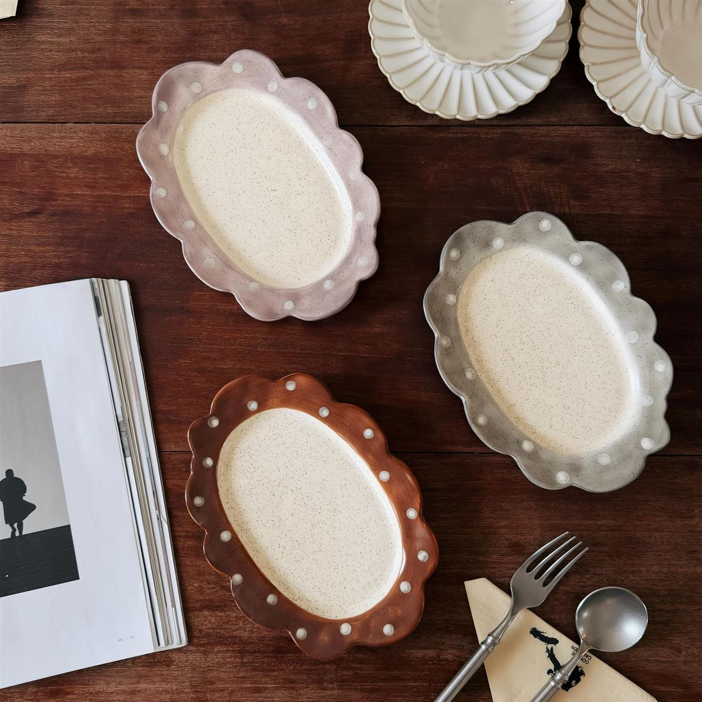

← Back to Plates

Vintage Ceramic Plates · SS-M432
Vintage Hand-Painted Polka Dot Ceramic Dessert, Breakfast & Cake Plate
A vintage ceramic plate with a scalloped rim, speckled glaze and hand-painted polka dots, available in four colors and two sizes.
- Material
- Ceramic
- Sizes
- 21.5 × 15.5 × 2.5 cm / 20 × 15 × 2.5 cm
- Weight
- 600 g
- Colors
- Brown · Gray · Purple · Pink
- Uses
- Dessert · Breakfast · Cake
- MOQ
- 50 pcs
Wholesale price
50+ pcsUS$3.60 / pc
Reference wholesale price. Final quotation is subject to size and color assortment, packaging, customization and shipping requirements.